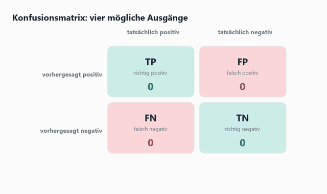
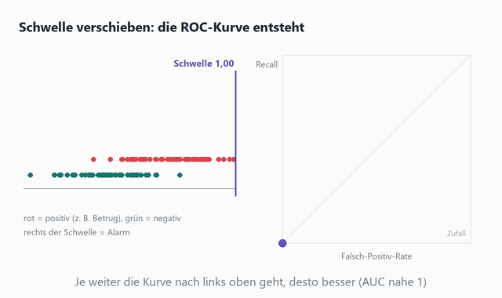
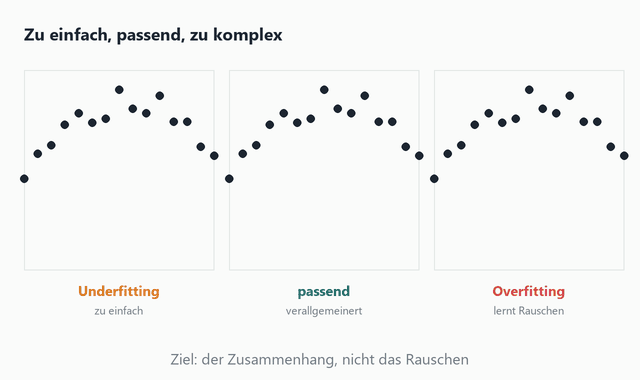
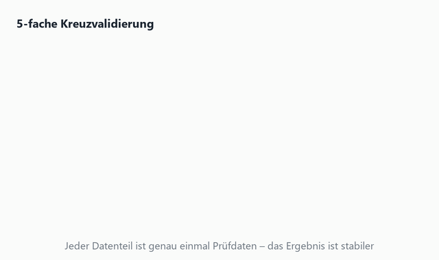
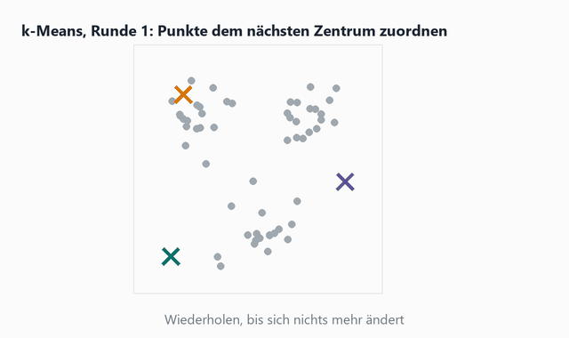
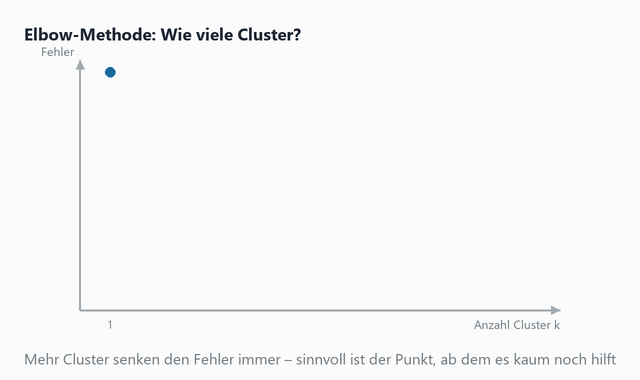
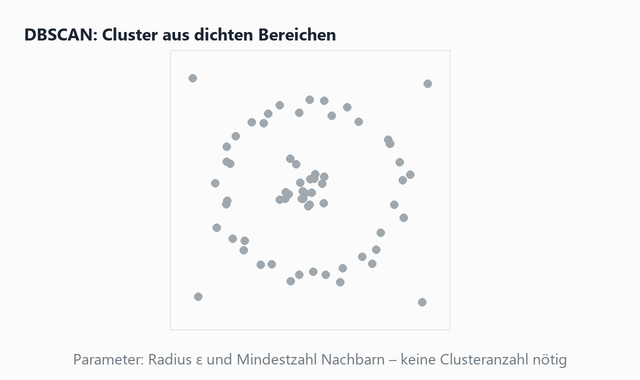
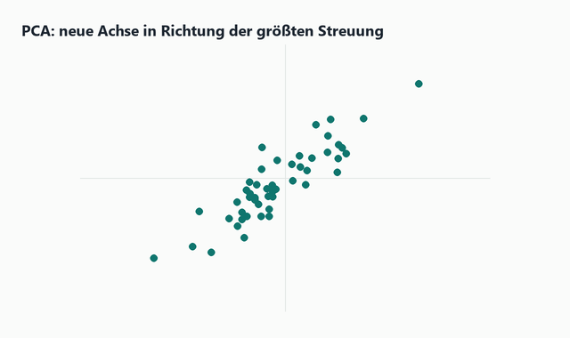

Evaluierung und Clustering: Modelle ehrlich bewerten, Gruppen ohne Labels finden
Ein Modell ist erst dann nützlich, wenn man weiß, wie gut es auf neuen Daten ist – und ob diese Güte für das Geschäft reicht. In diesem Modul lernen Sie die wichtigsten Kennzahlen für Klassifikation und Regression, erkennen Über- und Unteranpassung, wählen Validierungsverfahren und Hyperparameter und übersetzen Modellgüte in Euro. Im dritten Teil finden Sie mit k-Means, hierarchischem Clustering und DBSCAN Gruppen in Daten ohne Labels und verdichten viele Merkmale mit PCA.
Konfusionsmatrix: richtig und falsch, positiv und negativ
Ein Rauchmelder kann sich auf zwei Arten irren: Er piept, obwohl es nicht brennt (Fehlalarm), oder er bleibt still, obwohl es brennt (übersehen). Beide Fehler sind schlecht – aber unterschiedlich schlimm.
Die Konfusionsmatrix (Verwechslungsmatrix) zählt bei binärer Klassifikation die vier möglichen Ausgänge. „Positiv“ ist die Klasse, nach der gesucht wird (Betrug, Defekt, Kündigung) – nicht etwas „Gutes“.

| tatsächlich positiv | tatsächlich negativ | |
|---|---|---|
| vorhergesagt positiv | TP richtig positiv – Treffer | FP falsch positiv – Fehlalarm (Fehler 1. Art) |
| vorhergesagt negativ | FN falsch negativ – übersehen (Fehler 2. Art) | TN richtig negativ – korrekt Entwarnung |
Erstes Wort = ob die Vorhersage stimmt (richtig/falsch), zweites Wort = was vorhergesagt wurde (positiv/negativ).
Prüfen Sie immer, ob Zeilen oder Spalten die Wirklichkeit zeigen. scikit-learn legt die Wirklichkeit in die Zeilen – viele Lehrbücher in die Spalten. Wer vertauscht, vertauscht Precision und Recall.
Accuracy, Precision, Recall, F1 – und wann welche zählt
Durchgerechnet (TP 40, FP 10, FN 20, TN 30)
- Accuracy = (40 + 30) / 100 = 70 %
- Precision = 40 / 50 = 80 %
- Recall = 40 / 60 ≈ 66,7 %
- F1 = 2 · 0,8 · 0,667 / (0,8 + 0,667) ≈ 0,727
- Spezifität = 30 / 40 = 75 %
| Wenn teurer ist … | dann wichtig | Beispiel |
|---|---|---|
| ein übersehener Fall (FN) | Recall | Krebsvorsorge, Betrug, sicherheitskritische Defekte |
| ein Fehlalarm (FP) | Precision | Spamfilter (wichtige Mail im Spam), Rückrufaktion, Kontosperrung |
| beides ähnlich | F1 | Themenzuordnung von Anfragen |
Precision fragt nach der Qualität der Alarme, Recall nach der Vollständigkeit der Treffer. Welche wichtiger ist, entscheiden die Kosten der Fehler.
Rechenaufgaben zur Konfusionsmatrix kommen in fast jeder Prüfung. Schreiben Sie immer die Formel, die eingesetzten Zahlen und das Ergebnis in Prozent auf – und einen Satz, was es für den Betrieb bedeutet.
Schwelle verschieben: ROC-Kurve und AUC
Ein Metalldetektor am Flughafen kann man empfindlicher stellen: Dann findet er jedes Messer – aber piept auch bei jedem Gürtel. Stellt man ihn unempfindlich, gibt es wenig Fehlalarme, aber Gefährliches rutscht durch.
Die meisten Klassifikatoren liefern eine Wahrscheinlichkeit; erst die Schwelle macht daraus eine Entscheidung. Die ROC-Kurve zeigt für alle Schwellen den Recall (True-Positive-Rate) gegen die Falsch-Positiv-Rate (FPR = FP / (FP + TN)). Die Fläche darunter heißt AUC.

| AUC | Bedeutung |
|---|---|
| 0,5 | Zufall (Diagonale) |
| 0,7 – 0,8 | brauchbar |
| 0,8 – 0,9 | gut |
| über 0,9 | sehr gut – bei schwierigen Aufgaben auf Data Leakage prüfen |
| 1,0 | perfekt |
Die AUC ist unabhängig von der Schwelle – gut zum Vergleichen von Modellen. Anschaulich: die Wahrscheinlichkeit, dass das Modell einem zufälligen positiven Fall einen höheren Wert gibt als einem zufälligen negativen. Bei sehr unausgewogenen Klassen ist zusätzlich die Precision-Recall-Kurve aussagekräftiger.
Die ROC-Kurve zeigt alle Schwellen auf einmal; die AUC fasst sie in einer Zahl zusammen. Die Schwelle für den Betrieb wählt man danach nach Kosten.
Unausgewogene Klassen: warum 99 % Accuracy nichts heißen kann
Ein Wetterfrosch sagt in der Wüste jeden Tag „kein Regen“ voraus und liegt an 360 von 365 Tagen richtig. Beeindruckend? Nein – die wenigen Regentage, um die es eigentlich geht, verpasst er alle.
Bei unausgewogenen Klassen (class imbalance) ist eine Klasse viel seltener. Accuracy wird dann von der häufigen Klasse dominiert und ist irreführend. Typisch: Betrug, Ausfälle, Kündigungen, seltene Krankheiten.
Beispiel: 1.000 Zahlungen, 10 betrügerisch. Ein „Modell“, das immer „kein Betrug“ sagt: Accuracy = 990 / 1.000 = 99 %, Recall = 0 / 10 = 0 %. Wertlos.
Was hilft
- Passende Kennzahlen: Recall, Precision, F1, PR-AUC, Kosten pro Entscheidung statt Accuracy.
- Stratifiziert aufteilen: Der seltene Anteil ist in Training und Test gleich groß.
- Klassen gewichten (class_weight): Fehler bei der seltenen Klasse zählen im Training mehr.
- Resampling: seltene Klasse vervielfachen (Oversampling, z. B. SMOTE) oder häufige ausdünnen (Undersampling) – nur auf den Trainingsdaten!
- Schwelle anpassen und mit Kosten begründen.
Bei seltenen Ereignissen nie nur die Accuracy nennen – erst Recall und Precision zeigen, ob das Modell die wichtigen Fälle findet.
Oversampling vor dem Train-Test-Split ist Data Leakage: Kopien desselben Falls landen in Training und Test, das Ergebnis wird geschönt.
Regressionsmetriken: MAE, MSE, RMSE, R², MAPE
Durchgerechnet
Tatsächlicher Absatz 10, 12, 8; Prognose 11, 15, 8. Fehler −1, −3, 0.
- MAE = (1 + 3 + 0) / 3 ≈ 1,33 Stück
- MSE = (1 + 9 + 0) / 3 ≈ 3,33
- RMSE = √3,33 ≈ 1,83 Stück
- MAPE = (10 % + 25 % + 0 %) / 3 ≈ 11,7 %
Liegt der RMSE deutlich über dem MAE, gibt es einzelne große Fehler. Welche Kennzahl man optimiert, folgt aus dem Geschäft: Sind große Fehler besonders teuer (Lagerausfall), nimmt man RMSE.
MAE ist leicht zu erklären, RMSE bestraft Ausreißer, R² zeigt den erklärten Anteil, MAPE spricht in Prozent.
Overfitting, Underfitting und die Bias-Varianz-Abwägung

| Underfitting | Overfitting | |
|---|---|---|
| Fehlerbild | Training schlecht, Test schlecht | Training sehr gut, Test deutlich schlechter |
| Ursache | Modell zu einfach, wichtige Merkmale fehlen | Modell zu komplex, zu wenig Daten, zu lange trainiert |
| Fachbegriff | hoher Bias (systematischer Fehler) | hohe Varianz (reagiert stark auf Zufall in den Daten) |
| Gegenmittel | komplexeres Modell, bessere Merkmale, weniger Regularisierung | mehr Daten, einfacheres Modell, Regularisierung, Early Stopping, Dropout, Kreuzvalidierung |
Gesucht ist die Komplexität, bei der der Fehler auf neuen Daten am kleinsten ist – nicht auf den Trainingsdaten.
„Bias“ heißt hier systematischer Fehler eines zu einfachen Modells – nicht dasselbe wie algorithmischer Bias im Sinne von Diskriminierung (Modul 6). Im Fachgespräch die Bedeutung klar machen.
Lernkurven lesen
Wer Klavier lernt, merkt anfangs schnelle Fortschritte, später nur noch kleine. Ob mehr Übung noch etwas bringt, sieht man am Verlauf – nicht an einem einzelnen Tag.
Eine Lernkurve zeigt den Fehler auf Trainings- und Validierungsdaten in Abhängigkeit von der Datenmenge oder – bei neuronalen Netzen – von den Trainingsepochen.
| Bild | Deutung | Maßnahme |
|---|---|---|
| Beide Kurven hoch, nah beieinander | Underfitting | stärkeres Modell, bessere Merkmale – mehr Daten helfen kaum |
| Training niedrig, Validierung hoch, große Lücke | Overfitting | mehr Daten helfen; Regularisierung |
| Validierungsfehler sinkt erst, steigt dann wieder (über Epochen) | ab dem Wendepunkt Overfitting | Early Stopping am Minimum |
| Beide Kurven niedrig und nah | gute Generalisierung | fertig – auf Testdaten bestätigen |
Die Lücke zwischen Trainings- und Validierungskurve zeigt Overfitting; beide hoch zeigen Underfitting.
Lernkurven sind ein starkes Argument im Projekt: „Mehr Daten zu labeln lohnt sich“ oder „lohnt sich nicht“ lässt sich damit belegen – und das ist eine Budgetentscheidung.
Kreuzvalidierung und Zeitreihen-Validierung
Eine Weinprobe mit nur einem Glas sagt wenig. Erst wer mehrere Gläser probiert, kann den Jahrgang fair beurteilen. Genauso wird ein Modell fairer bewertet, wenn es mehrmals auf unterschiedlichen Prüfdaten getestet wird.
Bei der k-fachen Kreuzvalidierung werden die Trainingsdaten in k gleich große Teile (Folds) geteilt. In k Runden ist jeweils ein Teil Prüfdaten, die übrigen sind Trainingsdaten. Das Ergebnis ist der Mittelwert (und die Streuung) der k Bewertungen.

- Stratifiziert: Jeder Fold hat denselben Klassenanteil – wichtig bei unausgewogenen Klassen.
- Gruppiert: Fälle derselben Person, Maschine oder Filiale bleiben im selben Fold.
- Zeitreihen: vorwärts rollierend – mit Jan–Mrz trainieren, April prüfen; mit Jan–Apr trainieren, Mai prüfen usw. Nie mit der Zukunft trainieren.
- Die echten Testdaten bleiben trotzdem außen vor: Kreuzvalidierung dient der Modellauswahl, der Test der Schlussbewertung.
Kreuzvalidierung macht die Bewertung stabiler, weil jedes Beispiel einmal geprüft wird – bei Zeitreihen nur vorwärts in der Zeit.
Hyperparameter-Tuning: Grid Search, Random Search und mehr
Beim Backen probiert man Temperatur und Backzeit: 170 °C 30 Minuten, 180 °C 25 Minuten … Systematisch alle Kombinationen durchzuprobieren dauert lange; geschickt ausgewählte Versuche führen schneller zum guten Kuchen.
Hyperparameter-Tuning sucht die Einstellungen, mit denen ein Modell auf Validierungsdaten (meist per Kreuzvalidierung) am besten abschneidet.
| Verfahren | Vorgehen | Eigenschaft |
|---|---|---|
| Grid Search | alle Kombinationen eines Rasters | gründlich, aber teuer: 3 Parameter mit je 5 Werten und 5 Folds = 625 Trainingsläufe |
| Random Search | zufällige Kombinationen in festem Budget | findet oft gleich gute Werte mit viel weniger Läufen |
| Bayes’sche Optimierung | lernt aus bisherigen Versuchen, wo es sich zu suchen lohnt | effizient bei teuren Modellen (z. B. Optuna) |
Hyperparameter werden auf Validierungsdaten gesucht und auf Testdaten nur noch bestätigt.
Wer so lange tunt, bis das Testergebnis passt, hat die Testdaten zu Validierungsdaten gemacht. Das Testergebnis ist dann zu optimistisch.
Regularisierung: L1 (Lasso), L2 (Ridge), Early Stopping
Ein Reisebudget zwingt zu einfachen Entscheidungen: Man nimmt nur mit, was wirklich zählt. Regularisierung ist ein „Budget“ für die Größe der Modellparameter.
Regularisierung ergänzt die Verlustfunktion um einen Strafterm für große Parameter. Das Modell wird einfacher und neigt weniger zu Overfitting. Die Stärke λ (in scikit-learn oft alpha bzw. C = 1/λ) ist ein Hyperparameter.
Weitere Formen: Early Stopping (Training beenden, wenn der Validierungsfehler wieder steigt), Dropout in neuronalen Netzen (Modul 5), Begrenzung der Baumtiefe, Datenaugmentation.
Regularisierung bestraft Komplexität: L2 schrumpft alle Gewichte, L1 wirft unwichtige Merkmale ganz hinaus.
Baseline und Geschäftskennzahlen: Ist das Modell besser als nichts?
Ein neues Navi lohnt sich nur, wenn es Sie schneller ans Ziel bringt als der Weg, den Sie ohnehin kennen. Der vertraute Weg ist die Messlatte.
Eine Baseline ist der einfachste sinnvolle Vergleich: die häufigste Klasse, der Mittelwert, der Vorjahreswert, eine bestehende Faustregel oder das heutige manuelle Verfahren. Ein KI-Modell muss sie deutlich schlagen – in einer Kennzahl, die für das Geschäft zählt.
Von Modellkennzahlen zu Euro
Betrugsprüfung: Ein übersehener Betrug kostet im Schnitt 500 €, eine unnötige Prüfung 20 €.
| FN | FP | Kosten | Accuracy | |
|---|---|---|---|---|
| Modell A | 20 | 10 | 20 · 500 + 10 · 20 = 10.200 € | höher |
| Modell B | 8 | 60 | 8 · 500 + 60 · 20 = 5.200 € | niedriger |
Modell B ist trotz schlechterer Accuracy fast 5.000 € günstiger. Solche Kostenmatrizen machen aus einer Technikentscheidung eine Geschäftsentscheidung – und gehören in jede Transferarbeit.
Weitere Geschäftskennzahlen: eingesparte Bearbeitungszeit, Umsatz durch gehaltene Kunden, Ausschussquote, Antwortzeit. Gemessen wird am besten im A/B-Test oder Pilotbetrieb gegen den bisherigen Prozess.
Erst die Baseline, dann das Modell – und bewertet wird in der Währung des Betriebs: Euro, Zeit, Qualität.
Hier treffen § 4 (KI) und § 7 (ökonomische Aspekte) aufeinander. Wer in der Situationsaufgabe Modellkennzahlen in Kosten übersetzt, zeigt genau die Verknüpfung, die DQR 6 verlangt.
k-Means Schritt für Schritt
Drei Eisverkäufer am Strand verteilen sich: Jeder Badegast geht zum nächsten Stand. Dann rückt jeder Verkäufer in die Mitte seiner Kundschaft. Die Badegäste orientieren sich neu – bis niemand mehr wechselt.
k-Means teilt die Daten in k Cluster, sodass die Punkte möglichst nahe an ihrem Clusterzentrum (Centroid) liegen. Minimiert wird die Summe der quadrierten Abstände zu den Zentren (WCSS, Inertia).

- k festlegen und k Startzentren wählen (zufällig oder klug verteilt mit k-Means++).
- Zuordnen: Jeder Punkt gehört zum nächsten Zentrum.
- Verschieben: Jedes Zentrum wird zum Mittelwert seiner Punkte.
- Wiederholen, bis sich die Zuordnung nicht mehr ändert.
Rechenbeispiel Zentrum: Punkte (1 | 2), (3 | 4), (2 | 6) gehören zu Cluster A. Neues Zentrum: ((1 + 3 + 2) / 3 | (2 + 4 + 6) / 3) = (2 | 4).
Grenzen: k muss vorgegeben werden; Ergebnis hängt vom Start ab (mehrmals starten); nur „runde“, ähnlich große Cluster; skalierte Merkmale nötig; Ausreißer ziehen Zentren weg.
k-Means: zuordnen zum nächsten Zentrum, Zentrum in die Mitte verschieben, wiederholen.
Anzahl der Cluster wählen: Elbow-Methode und Silhouette

Beispiel: a = 2, b = 5 → s = (5 − 2) / 5 = 0,6. Man berechnet s für alle Punkte, bildet den Mittelwert und wählt das k mit dem höchsten Wert.
Am wichtigsten bleibt die fachliche Brauchbarkeit: Fünf Kundensegmente, für die das Marketing fünf verschiedene Maßnahmen hat, sind nützlicher als mathematisch optimale elf.
Elbow: Wo bringt ein zusätzlicher Cluster kaum noch Verbesserung? Silhouette: Wie gut passt jeder Punkt in seinen Cluster?
Hierarchisches Clustering und Dendrogramm
Ein Stammbaum: Geschwister bilden die engste Gruppe, mit den Cousins die Familie, mit den Großeltern-Linien die Verwandtschaft. Je nachdem, auf welcher Höhe man den Baum „durchschneidet“, entstehen wenige große oder viele kleine Gruppen.
Agglomeratives hierarchisches Clustering beginnt mit jedem Punkt als eigenem Cluster und fügt schrittweise die beiden ähnlichsten zusammen. Das Ergebnis ist ein Dendrogramm; die Clusteranzahl wählt man danach durch einen Schnitt auf passender Höhe.
| Verknüpfung (Linkage) | Abstand zweier Cluster | Eigenschaft |
|---|---|---|
| Single | nächstes Punktpaar | bildet lange Ketten |
| Complete | entferntestes Punktpaar | kompakte Cluster |
| Average | mittlerer Abstand aller Paare | Kompromiss |
| Ward | Zuwachs der Streuung beim Verschmelzen | ähnlich k-Means, sehr verbreitet |
Vorteile: k muss nicht vorab feststehen, das Dendrogramm ist gut zu erklären. Nachteil: rechenintensiv bei großen Datenmengen (zehntausende Punkte und mehr).
Hierarchisches Clustering baut einen Baum ähnlicher Gruppen; die Clusterzahl entsteht durch einen Schnitt im Dendrogramm.
DBSCAN und Anomalieerkennung
Auf einem Volksfest sieht man von oben dichte Menschentrauben vor den Bühnen – egal, welche Form sie haben. Wer allein am Rand steht, gehört zu keiner Gruppe.
DBSCAN (Density-Based Spatial Clustering of Applications with Noise) bildet Cluster aus dicht beieinanderliegenden Punkten. Ein Punkt mit mindestens minPts Nachbarn im Radius ε ist ein Kernpunkt; zusammenhängende Kernpunkte und ihre Nachbarn bilden einen Cluster; alle übrigen Punkte sind Rauschen.

Anomalieerkennung im Überblick
- Statistisch: z-Werte, IQR-Regel (Modul 2) – einfach, für einzelne Merkmale.
- Dichtebasiert: DBSCAN-Rauschen, Local Outlier Factor.
- Isolation Forest: Ausreißer lassen sich mit wenigen zufälligen Schnitten isolieren.
- Rekonstruktion: Autoencoder (Modul 5) rekonstruieren Normales gut, Ungewöhnliches schlecht.
Einsatz: Betrugsverdacht, Maschinenstörungen, Netzwerkangriffe, Datenqualitätsprobleme. Weil Labels fehlen, ist die Bewertung schwierig – Fachleute prüfen eine Stichprobe der Treffer.
DBSCAN findet dichte Gruppen jeder Form, braucht kein k und markiert Ausreißer als Rauschen.
Dimensionsreduktion: PCA anschaulich
Ein Schattenbild an der Wand: Aus einem dreidimensionalen Gegenstand wird ein flaches Bild. Dreht man den Gegenstand geschickt, erkennt man im Schatten trotzdem fast alles.
Die Hauptkomponentenanalyse (PCA, Principal Component Analysis) dreht das Koordinatensystem so, dass die erste neue Achse (Hauptkomponente) die größte Streuung erfasst, die zweite die zweitgrößte usw. Behält man nur die ersten Komponenten, verdichtet man viele Merkmale auf wenige.

- Erklärte Varianz: Jede Komponente erklärt einen Anteil der Gesamtstreuung; man behält so viele, bis z. B. 90 % erreicht sind.
- Zwecke: Visualisierung in 2D, Rauschen reduzieren, Rechenzeit sparen, korrelierte Merkmale bündeln.
- Voraussetzung: Merkmale standardisieren – sonst dominiert das Merkmal mit der größten Einheit.
- Nachteil: Komponenten sind Mischungen der Originalmerkmale und schwer fachlich zu deuten.
PCA ersetzt viele korrelierte Merkmale durch wenige neue Achsen, die möglichst viel Streuung erhalten.
Übungen mit Musterlösung
Rechnen Sie mit Taschenrechner und tragen Sie die Ergebnisse ein. Der Konfusionsmatrix-Rechner in Lektion 2 hilft bei der Kontrolle.
Aufgabe 1: Kennzahlen berechnen
6 PunkteEin Wartungsmodell markiert Maschinen mit drohendem Ausfall. Ergebnis auf 500 Testfällen: TP 30, FP 20, FN 10, TN 440. Berechnen Sie Accuracy, Precision, Recall und F1 (in %, eine Nachkommastelle).
Lösung anzeigen
Accuracy = 470 / 500 = 94,0 %; Precision = 30 / 50 = 60,0 %; Recall = 30 / 40 = 75,0 %; F1 = 2 · 0,6 · 0,75 / 1,35 = 66,7 %. Je 1,5 Punkte.
Aufgabe 2: Kennzahl wählen
3 PunkteWelche Kennzahl ist am wichtigsten? 1. Ein Modell sperrt verdächtige Kundenkonten automatisch. 2. Ein Modell sucht sicherheitskritische Risse in Flugzeugteilen; jeder Treffer wird ohnehin von Menschen geprüft. 3. Anfragen werden einer von fünf etwa gleich großen Abteilungen zugeordnet.
Lösung anzeigen
1. Precision – jede falsche Sperre trifft einen ehrlichen Kunden. 2. Recall – kein Riss darf übersehen werden. 3. Accuracy bzw. F1 – Klassen ausgewogen, Fehler ähnlich teuer. Je 1 Punkt.
Aufgabe 3: Unausgewogene Klassen
4 PunkteEin Dienstleister präsentiert ein Kündigermodell mit 96 % Accuracy. 4 % der Kunden kündigen tatsächlich. Bewerten Sie die Aussage und nennen Sie zwei Kennzahlen, die Sie stattdessen sehen wollen.
Lösung anzeigen
96 % erreicht schon ein Modell, das niemals „kündigt“ vorhersagt – die Aussage beweist nichts (2 P.). Gefordert: Recall und Precision für die Klasse „kündigt“, F1 oder PR-AUC, idealerweise Kosten/Nutzen im Pilotbetrieb (2 P.).
Aufgabe 4: Regressionsmetriken
5 PunkteTatsächliche Lieferzeiten 4, 6, 10, 8 Tage, Prognosen 5, 6, 7, 8 Tage. Berechnen Sie MAE, MSE und RMSE (zwei Nachkommastellen).
Lösung anzeigen
Fehler −1, 0, 3, 0. MAE = 4 / 4 = 1,00 (1 P.); MSE = (1 + 0 + 9 + 0) / 4 = 2,50 (2 P.); RMSE = √2,5 ≈ 1,58 Tage (2 P.).
Aufgabe 5: Diagnose aus Lernkurven
4 PunkteOrdnen Sie zu und nennen Sie je eine Maßnahme: a) Trainingsfehler 2 %, Validierungsfehler 19 %. b) Trainingsfehler 21 %, Validierungsfehler 22 %.
Lösung anzeigen
a) Overfitting (1 P.); Maßnahme: mehr Daten, Regularisierung, einfacheres Modell, Early Stopping (1 P.). b) Underfitting (1 P.); Maßnahme: komplexeres Modell, bessere Merkmale, weniger Regularisierung (1 P.).
Aufgabe 6: Kreuzvalidierung
4 Punktea) Bei 5-facher Kreuzvalidierung ergeben sich F1-Werte 0,70; 0,74; 0,72; 0,68; 0,76. Berechnen Sie den Mittelwert. b) Warum darf man bei monatlichen Absatzdaten nicht zufällig in Folds teilen?
Lösung anzeigen
a) 3,60 / 5 = 0,72 (2 P.). b) Sonst trainiert das Modell mit späteren Monaten und prüft auf früheren – es kennt die Zukunft (Data Leakage); stattdessen vorwärts rollierend validieren (2 P.).
Aufgabe 7: Grid Search
3 PunkteFür einen Random Forest sollen 4 Werte für die Baumanzahl, 3 für die Tiefe und 2 für die Mindestblattgröße getestet werden, jeweils mit 5-facher Kreuzvalidierung. Wie viele Trainingsläufe sind das, und welche Alternative spart Zeit?
Lösung anzeigen
4 · 3 · 2 · 5 = 120 Läufe (2 P.). Alternative: Random Search oder Bayes’sche Optimierung mit festem Budget (1 P.).
Aufgabe 8: Kosten statt Accuracy
5 PunkteEin übersehener Maschinenausfall kostet 4.000 €, eine unnötige Inspektion 150 €. Modell A: FN 6, FP 40. Modell B: FN 2, FP 110. Welches Modell ist günstiger, und um wie viel?
Lösung anzeigen
A: 6 · 4.000 + 40 · 150 = 30.000 € (2 P.). B: 2 · 4.000 + 110 · 150 = 24.500 € (2 P.). B ist 5.500 € günstiger (1 P.).
Aufgabe 9: k-Means rechnen
4 PunkteZentren A (2 | 2) und B (8 | 8). Punkte P1 (3 | 1), P2 (7 | 9), P3 (4 | 3), P4 (9 | 6). a) Ordnen Sie jeden Punkt dem nächsten Zentrum zu. b) Berechnen Sie das neue Zentrum von A.
Lösung anzeigen
a) P1 → A, P2 → B, P3 → A, P4 → B (2 P.). b) Mittel von P1 und P3: ((3 + 4) / 2 | (1 + 3) / 2) = (3,5 | 2) (2 P.).
Aufgabe 10: Silhouette
3 PunkteFür einen Punkt gilt: mittlerer Abstand im eigenen Cluster a = 1,5, mittlerer Abstand zum nächsten fremden Cluster b = 6. Berechnen und deuten Sie den Silhouettenkoeffizienten.
Lösung anzeigen
s = (6 − 1,5) / 6 = 0,75 (2 P.); der Punkt passt gut in seinen Cluster und ist klar vom Nachbarcluster getrennt (1 P.).
Aufgabe 11: Verfahren für Gruppen und Ausreißer
3 PunkteWelches Verfahren passt? 1. Sensordaten einer Anlage: Normalzustand bilden unregelmäßig geformte dichte Bereiche, gesucht sind einzelne ungewöhnliche Messungen. 2. Ein Händler will genau vier Kundensegmente für vier Kampagnen. 3. Ein Forschungsteam will 300 Produkte zeigen, wie sie in Gruppen und Untergruppen zusammenhängen.
Lösung anzeigen
1. DBSCAN (bzw. Isolation Forest) · 2. k-Means mit k = 4 · 3. hierarchisches Clustering mit Dendrogramm. Je 1 Punkt.
Aufgabe 12: Situationsaufgabe Bewertungskonzept
8 PunkteDie Muster Energie GmbH lässt ein Modell entwickeln, das Stromzähler mit Manipulationsverdacht markiert. 0,5 % der Zähler sind manipuliert; jeder Verdacht löst einen Technikereinsatz (180 €) aus, eine unentdeckte Manipulation kostet im Schnitt 2.500 €. Der Anbieter wirbt mit „99,4 % Genauigkeit“. Entwerfen Sie ein Bewertungskonzept: Welche Kennzahlen, welche Validierung, wie wird die Schwelle festgelegt, und wie wird der Nutzen im Betrieb nachgewiesen?
Lösung anzeigen
Kennzahlen (2 P.): Recall und Precision für „manipuliert“, PR-AUC; Accuracy ist bei 0,5 % Basisrate aussagelos (99,5 % schon ohne Modell). Validierung (2 P.): stratifizierte bzw. zeitlich vorwärts gerichtete Kreuzvalidierung, unberührte Testdaten, auf Leakage prüfen. Schwelle (2 P.): über eine Kostenmatrix (FN 2.500 €, FP 180 €) und die Technikerkapazität optimieren. Nutzen (2 P.): Pilot bzw. A/B-Test gegen das bisherige Verfahren, gemessen in aufgedeckten Fällen, Einsatzkosten und Netto-Ersparnis; laufendes Monitoring.
Abschlussquiz Modul 4
20 Fragen im Stil der schriftlichen Prüfung, jeweils eine richtige Antwort. Ab 14 richtigen Antworten (70 %) sind Sie gut vorbereitet.
Das Wichtigste auf einen Blick
Konfusionsmatrix
TP, FP, FN, TN – erst „richtig/falsch“, dann „positiv/negativ“.
Precision / Recall
Qualität der Alarme / Vollständigkeit der Treffer; F1 verbindet beide.
ROC und AUC
alle Schwellen auf einmal; 0,5 Zufall, 1 perfekt.
Unausgewogene Klassen
Accuracy täuscht; Recall, Precision, Kosten zeigen.
Regression
MAE, RMSE, R², MAPE.
Generalisierung
Underfitting = Bias, Overfitting = Varianz; Lernkurven lesen.
Validierung
k-fach, stratifiziert, gruppiert; Zeitreihen vorwärts.
Tuning und Regularisierung
Grid/Random Search; L1 wählt aus, L2 schrumpft.
Baseline und Kosten
Erst schlagen, was es schon gibt; in Euro bewerten.
Clustering, PCA
k-Means, hierarchisch, DBSCAN; Elbow, Silhouette; PCA verdichtet.
Glossar Modul 4
| Begriff | Erklärung |
|---|---|
| AUC | Fläche unter der ROC-Kurve |
| Centroid | Zentrum eines Clusters bei k-Means |
| Dendrogramm | Baumdiagramm des hierarchischen Clusterings |
| Early Stopping | Training beenden, wenn der Validierungsfehler steigt |
| F1-Score | Harmonisches Mittel aus Precision und Recall |
| Fold | Teil der Daten bei der Kreuzvalidierung |
| Kostenmatrix | Kosten je Fehlerart, Grundlage für Schwelle und Modellwahl |
| Recall | Anteil der gefundenen echten positiven Fälle |
| Silhouette | Maß, wie gut ein Punkt in seinen Cluster passt |
| Stratifizierung | Aufteilung mit gleichem Klassenanteil in allen Teilen |
Weiter mit Modul 5: Neuronale Netze und Deep Learning – vom einzelnen Neuron bis zum Sprachmodell.